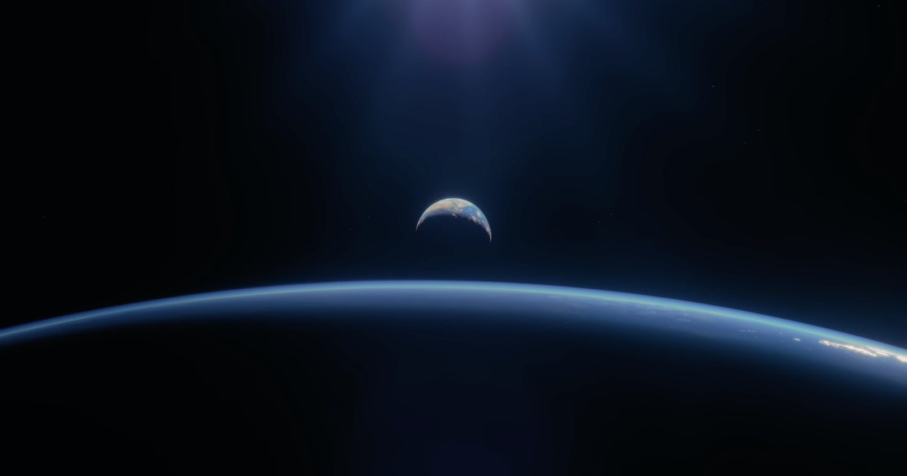
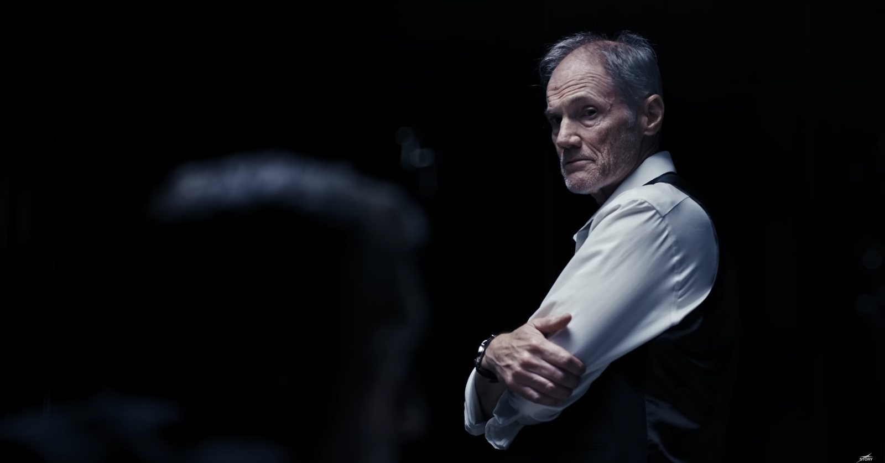
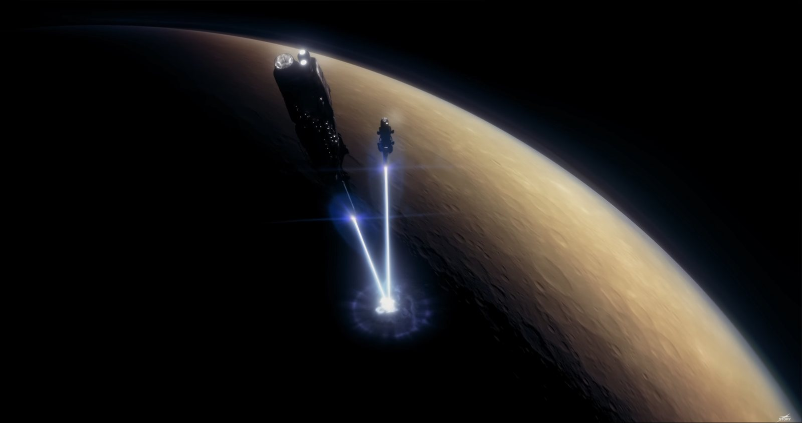
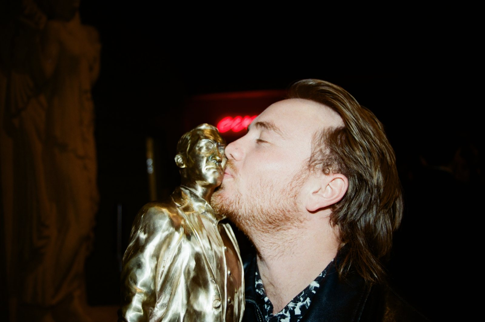

Producer
Narrative Short
2025
Planet
A science-fiction short film from Story Co.
My role: produced the film and the premiere — a sold-out night at the Palace of Fine Arts.
- Studio
- Story Co.
- Year
- 2025
- Premiere
- Palace of Fine Arts — sold out, 960 seats
- Watch
- Full film ↗
The Team
- DirectorJason Carman
- WriterJason Carman
- ProducerMaxie Harrington
- CinematographerEmil Gurvin
- EditorAndrew Fuchs
- VFXClay Welch
- ComposerSister
Stills



The team, off camera
